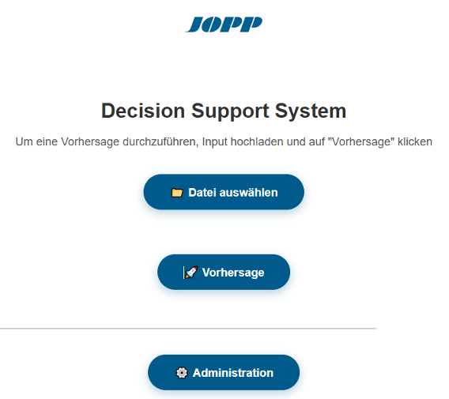
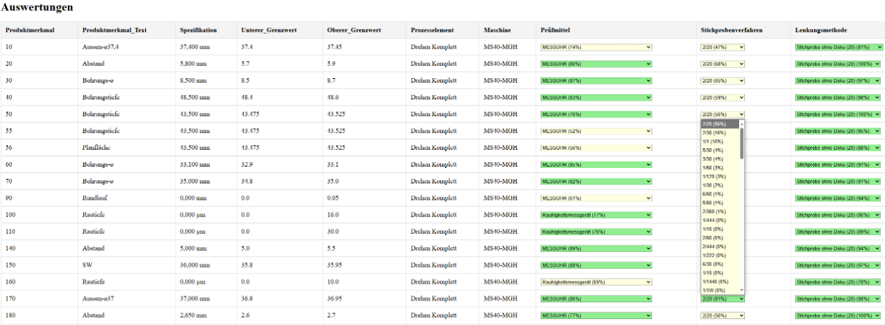

Predicting new Values
On the landing page, the first step to generate predictions is uploading an input Excel file via the "Datei auswählen" button.
{kind=link}
By clicking on "Vorhersage” the prediction process is initiated, and the user is redirected to the page where the results are displayed.
{kind=link}
By default, the page displays the results with the highest probability for each predicted value. If a prediction appears incorrect, it can be manually adjusted via a drop-down menu. Therefore, it is necessary to manually review all values to ensure their correctness. The probability of each predicted value is shown in parentheses, and values with a probability greater than 75% are highlighted in green through color coding. By clicking the button "Excel Download bereitstellen" the table with the currenctly selected values is downloaded as an excel file.
Technical Aspects
The loop iterates over all features (featureCount) and creates one table row (<tr>) per item.
{% for i in range(featureCount) %}
The first few columns display values from the original input dataset. If a specific key is missing, the placeholder "Fehlend" is shown:
<td>{{ predictionInput[i].get('Produktmerkmal', 'Fehlend') }}</td>
<td>{{ predictionInput[i].get('Produktmerkmal_Text', 'Fehlend') }}</td>
<td>{{ predictionInput[i].get('Spezifikation', 'Fehlend') }}</td>
<td>{{ predictionInput[i].get('Unterer_Grenzwert', 'Fehlend') }}</td>
<td>{{ predictionInput[i].get('Oberer_Grenzwert', 'Fehlend') }}</td>
<td>{{ predictionInput[i].get('Prozesselement', 'Fehlend') }}</td>
<td>{{ predictionInput[i].get('Maschine', 'Fehlend') }}</td>
For the fields Prüfmittel, Stichprobenverfahren, and Lenkungsmethode, drop-down menus are shown. These menus are pre-filled with the model’s predicted value and allow manual correction by the user. Each drop-down is color-coded depending on the model’s confidence score:
<select name="Prüfmittel" class="
{% if confidence >= 0.75 %}
green
{% elif confidence >= 0.25 %}
yellow
{% else %}
red
{% endif %}
">
probaDict['Lenkungsmethode'][i] refers to a list of tuples that contain possible prediction options for row i of the Lenkungsmethode field.
{% set confidence = probaDict['Lenkungsmethode'][i][0][2] %}
Each drop-down contains multiple prediction options. These are taken from probaDict and structured as tuples.
tuple[0] : The probability
tuple[1] : The actual prediction key
tuple[3] : Shown in the dropdown
The selected attribute is added if the value is equal to the model’s predicted result for that row (results['Lenkungsmethode'][i]), making it the default shown item.
{% for tuple in probaDict['Lenkungsmethode'][i] %}
<option value="{{ tuple[1] }}" {% if tuple[0] == results['Lenkungsmethode'][i] %} selected {% endif %}>
{{ tuple[3] }}
</option>
{% endfor %}
Below the table, there is a submit button. When clicked, the selected values are compiled and made available as an Excel download.
<button type="submit" class="submit-button">Excel-Download bereitstellen</button>
A second button lets the user return to the homepage.
<button onclick="window.location.href='/index'" class="submit-button">Zurück zur Startseite</button>
Notes
HTML and logic done by Johannes